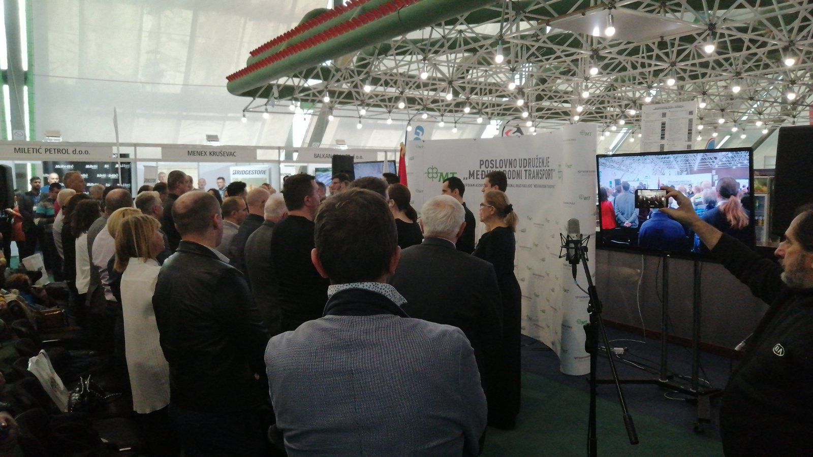
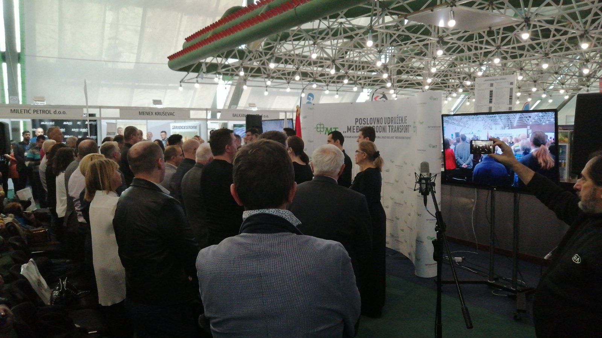
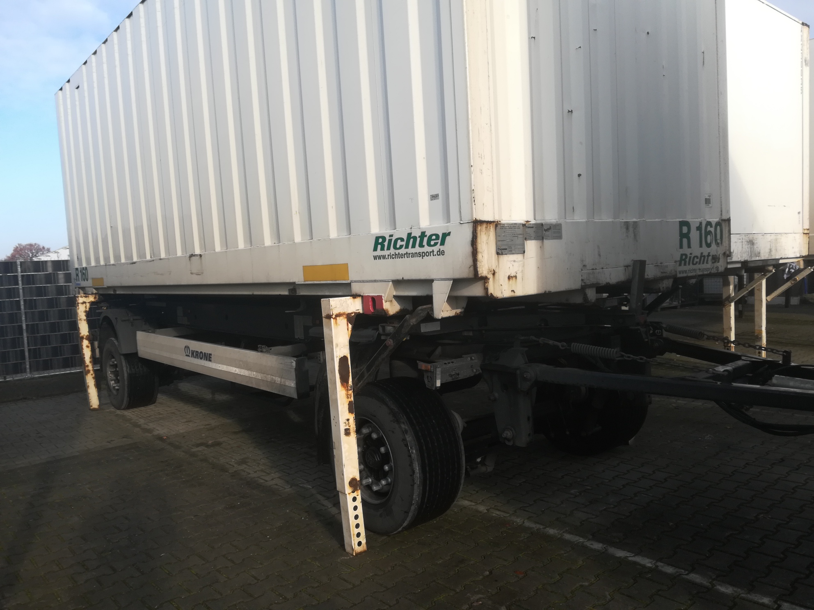
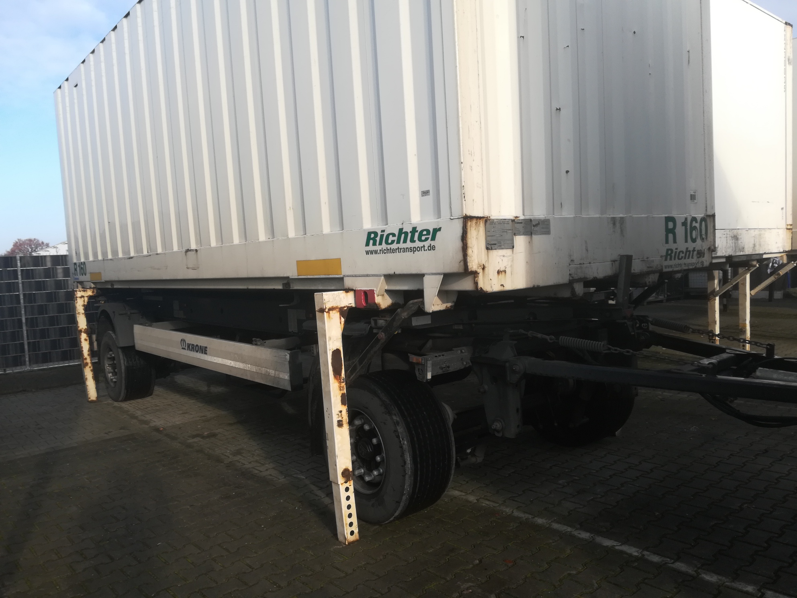
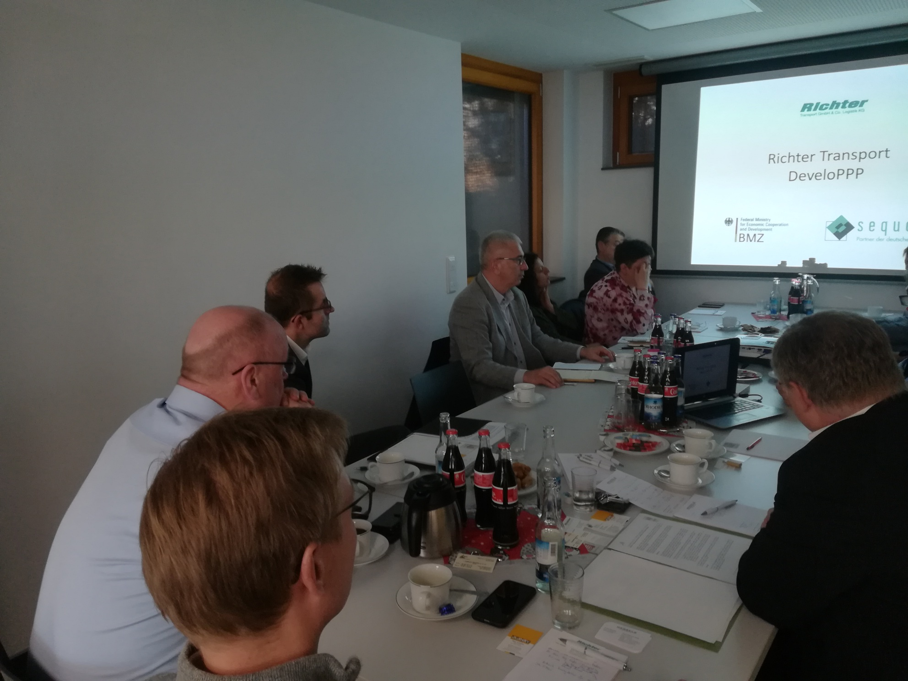
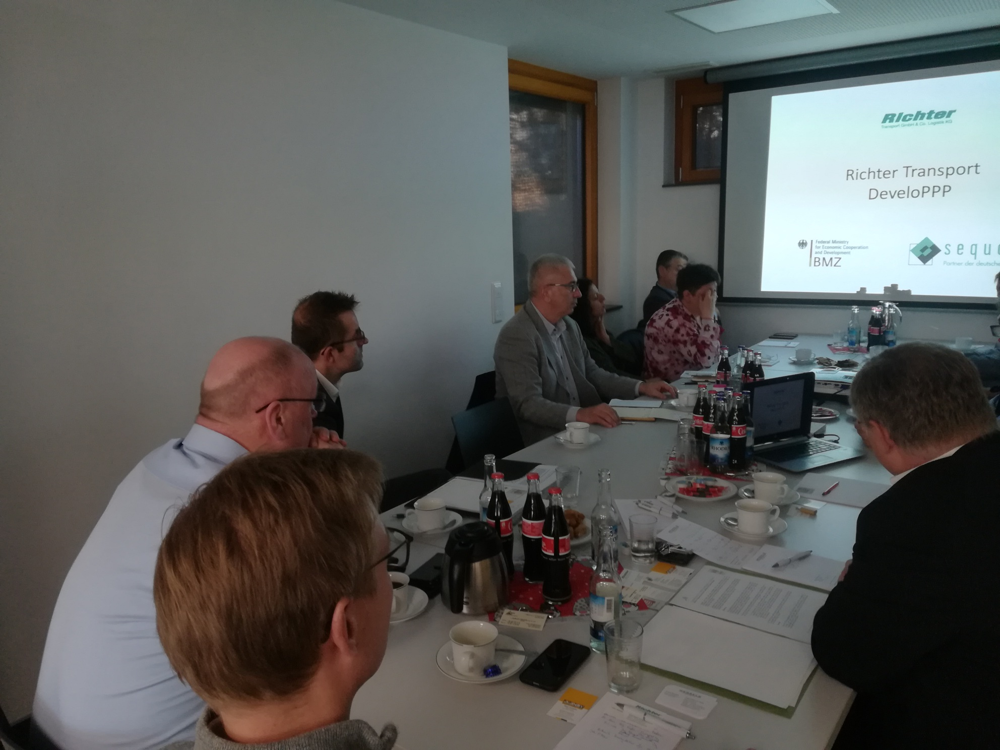

15/12/2019
Generalversammlung des serbischen Transportverbandes PUMED
Am Freitag, 13. Dezember 2019, begann die 19. Jährliche Hauptversammlung des serbischen Speditionsverbandes PUMED genannt MT zusammen mit der 16. LKW-Messe, beide traditionell in Belgrad veranstaltet. Eine große Anzahl von Teilnehmern aus Serbien und der Region, deren Geschäftspartner, Kollegen aus den Nachbarländern und Vertreter von Behörden und Staat fanden sich zusammen, um jüngste Trends der Transportwirtschaft zu diskutieren. Stellvertretend für die Unternehmung Richter Transport und das laufende develoPPP-Vorhaben nahm Darko Nikolic teil, um die Impulse des genannten Vorhabens für die Verbesserung von Wettbewerbsfähigkeit und Aus- und Weitbildung zu betonen.


 


10/12/2019
Studienreise nach Richter Transport in Wesel, NRW, Deutschland
In der ersten Dezemberwoche besuchte eine Studiendelegation Richter Transport in Wesel. Am Anfang stand ein Empfang auf dem Betriebshof, die Erläuterung der Struktur des Unternehmens und die Diskussion der Berufskraftfahrerausbildung in Deutschland. Ein spezifischer Teil der Studienreise der vierköpfigen serbischen Delegation war das Kennenlernen der nächtlichen Systemtransporte in Deutschland. Ein Treffen im Rahmen der Reise war der Besuch der deutschen Speditionsverbandes VVWL und seiner Mitglieder. Ein weiteres Meeting war der Fahrschule Schlißke aus der Gemeinschaft von Academy gewidmet und deren Arbeit bei der Berufskraftfahrerausbildung. Diese Schule arbeitet auch beim serbischen Curriculum aktiv fachlich mit.

 

 



20/10/2019
Projekt-Kickoff Präsentation und Diskussionstribüne
Letzte Tage fand die Vorstellung und die Gesprächsführung über ein neues Vorhaben statt. Das
Ziel dieses develoPPP-Vorhabens des deutschen Bundesministeriums für wirtschaftliche
Zusammenarbeit und Entwicklung und der sequa gGmbh, Bonn, in Serbien ist die
Kompetenzsteigerung für die Lehre und Bildungsstand in der serbischen Warenlogistik.
Das Weseler Unternehmen Richter Transport und das von diesem Unternehmen geleitete
Konsortium baut ein Qualifizierungszentrum für die Warenlogistik auf der Straße vor allem
dazu auf, um Standards der systemischen Verkehre einzuführen, die Kenntnis und Fertigkeiten
damit zu verbessern und damit auch die Aus- und Weiterbildung im ganzen Land.
Während eines guten Jahres wird ein neues Trainingszentrum in Belgrad aufgebaut, mit einem
Curriculum ausgestattet, mit Workshops zum Thema Systemtransporte und der Wirkung von
Nachtfahrten, mit der Organisation von Studienreisen, Pilotmaßnahmen und der Inspiration der
serbischen Lehre durch praktische Beispiele zwecks qualitativer Aufwertung dieser Lehre.
Nach der Projektdurchführung durch Richter Transport wird das Trainingszentrum CENTAR ZA
OBUKU seine gewerbliche Bildungstätigkeit und Marktpräsenz in Serbien und im Westbalkan
fortsetzen, die Berufsbildung heben, praktische Fertigkeiten vermitteln und neue
Technologien aus Deutschland in Serbien und der Region einführen.
Der strategische Partner in Serbien ist der Transport- bzw. Speditionsverband PUMED.